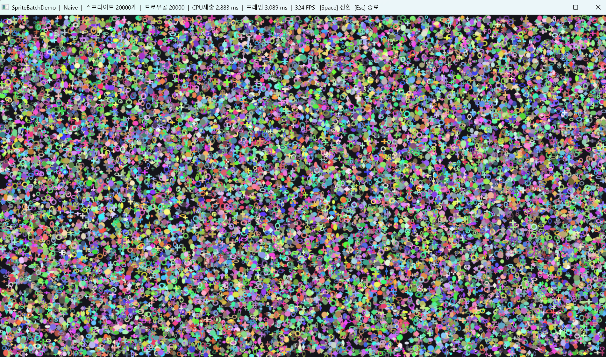
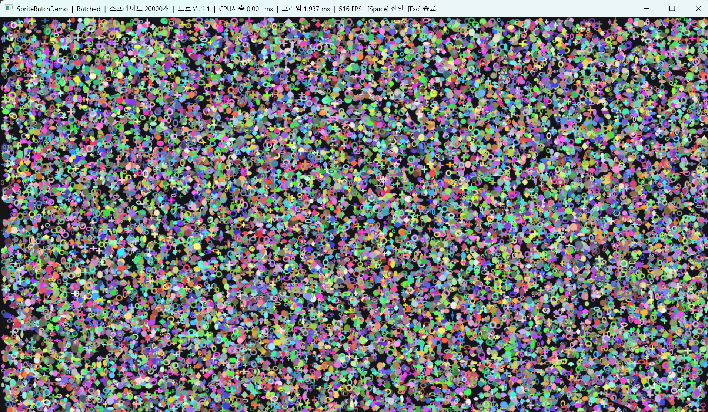

Direct3D 11 · C++ Rendering
엔진 없이 Win32와 Direct3D 11만으로 만든 2D 스프라이트 렌더러. 같은 장면을 개별 드로우(Naive)와 배치(Batched)로 실시간 전환하며, 드로우 콜 방식이 성능에 주는 영향을 숫자로 실측한다.
두 모드는 같은 스프라이트 20,000개를 똑같은 픽셀로 그린다. 다른 것은 그리는 방법뿐이다. 그 결과 렌더 스레드가 드로우를 제출하는 CPU 시간이 이만큼 갈렸다.
움직이는 실전 조건(동적 배칭) 실행 화면. 두 화면은 픽셀 단위로 동일하다 — 제목 표시줄의 수치만 다르다.


이 프로젝트는 MiniD3D11Renderer(스프라이트 하나 그리기)에서 바로 이어진다. 뼈대(Common/Window/Renderer/FrameTimer)는 그대로 물려받고, 아래를 확장했다.
| 항목 | MiniD3D11Renderer | SpriteBatchDemo | 왜 바꿨나 |
|---|---|---|---|
| 목표 | 스프라이트 1개 | 20,000개 · Naive/Batched | 배칭 효과를 측정하려면 다수·두 경로 필요 |
| 정점 좌표 | 단위 사각형 + 상수버퍼 | 픽셀 좌표를 정점에 구움 | 위치가 CB에 있으면 배칭 불가 |
| 드로우 | DrawIndexed(6) 1번 | Naive N번 / Batched 1번 | 두 방식의 비용 차이가 주제 |
| 인덱스 | uint16 | uint32 | N×4 정점이 65,535 초과 |
| VSync | Present(1,0) 켬 | Present(0, TEARING) 끔 | 성능차를 보려면 상한 해제 |
| 계측 | 평균 FPS | CPU 제출 ms + 프레임 ms | 배칭이 이기는 곳은 CPU |
| 텍스처 | 없음(정점 색) | 코드 생성 아틀라스 + UV | 게임다움 + 텍스처 바인딩 절약 |
| 블렌딩 | 없음 | 알파 블렌딩 | 도형 가장자리 처리 |
MiniD3D11Renderer는 단위 사각형(0~1) 하나에 위치를 상수 버퍼로 넘겼다. 스프라이트 하나엔 깔끔하지만, 위치가 CB에 있어 개수만큼 CB를 바꿔 그려야 한다 = 배칭 불가. 그래서 각 스프라이트의 네 꼭짓점을 픽셀 좌표로 CPU에서 미리 구워, 모두 같은 좌표계에 두고 한 버퍼로 묶었다.
Naive는 실무의 순진한 경로: 스프라이트마다 정점 4개를 동적 버퍼에 Map(WRITE_DISCARD)로
올리고 → 그린다, 를 N번. Batched는 IMMUTABLE 버퍼에 전부 구워 DrawIndexed(N*6) 한 번.
SyncInterval을 0으로 줘도 두 모드가 똑같이 16.677ms(정확히 60FPS)로 나왔다. 원인은
플립 모델 + 창모드 — DWM(윈도우 합성기)이 주사율로 다시 묶는다. 진짜로 풀려면 tearing을 켜야 한다:
IDXGIFactory5로 지원 확인 → 스왑체인/ResizeBuffers에 ALLOW_TEARING 플래그 →
Present(0, DXGI_PRESENT_ALLOW_TEARING). 이걸 넣고서야 프레임 시간이 갈라졌다.
도형 4종(원·링·다이아몬드·+)을 256×256 한 장에 코드로 그린다(외부 이미지·라이브러리 없음). 스프라이트마다 UV로 하나씩 뽑아 쓴다. 한 장에 모아둔 덕에 텍스처 바인딩을 스프라이트마다 바꿀 필요가 없어, SRV 한 번으로 2만 개를 배칭 한 번에 그린다 — 실제 엔진이 아틀라스로 state change를 줄이는 이유 그대로다. 알파 블렌딩으로 가장자리를 배경과 섞어 파티클처럼 보이게 했다.
AMD Radeon 780M(내장), 1280×720, VSync OFF(ALLOW_TEARING), Release, 스프라이트 20,000개 · 두 단계로 측정
정점을 한 번 굽고(IMMUTABLE) 매 프레임 그리기만. Batched는 업로드가 아예 없어 극단적 격차.
| 모드 | 드로우 콜 | CPU 제출 시간 | 총 프레임 시간 | FPS |
|---|---|---|---|---|
| Naive | 20,000 | 2.883 ms | 3.089 ms | 324 |
| Batched | 1 | 0.001 ms | 1.937 ms | 516 |
→ CPU 제출 약 2,900배 감소 (Batched는 업로드 0 → 드로우 1번만 남음)
스프라이트가 움직여 매 프레임 재업로드. Batched는 정점을 한 번에, Instanced는 인스턴스 N개(~1/3 데이터)만 올린다.
| 모드 | 드로우 콜 | CPU 제출 | 올리는 데이터 | FPS |
|---|---|---|---|---|
| Naive | 20,000 | ~1.8 ms | 정점 N×4 (N번 쪼개) | 309 |
| Batched | 1 | ~0.3 ms | 정점 N×4 (한 번) | 434 |
| Instanced | 1 | ~0.14 ms | 인스턴스 N (한 번) | 463 |
Map()은 이동·정지 모두
0.001ms(안 기다림). WRITE_DISCARD가 VidMM rename으로 GPU 대기를 없앤 것.
제출 시간의 거의 전부는 memcpy(CPU 복사)였다 — 즉 이 지표는 드라이버/GPU가 아니라 CPU 비용.
추측하지 않고 쪼개서 측정해 확인했다.